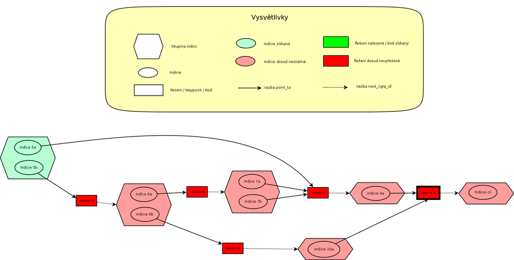

Příklad obecné struktury soutěže
V následujícím příkladu popisuji jak by mohla vypadat struktura nelineární
soutěže (nebo jen její časti) a jak se mění vnitřní stavy systému v průběhu
zadávání soutěžních kódů. V případě lineární soutěže, funguje systém uvnitř
naprosto stejně. Jenom graf indicií a řešení je mnohem jednodušší a neobsahuje
různá rozvětvení.
Předpokládejme že soutěžní tým se v soutěži dostal do fáze kdy získal indicii 5.
Zároveň předpokládejme že řešení 9 je cílový waypoint a že pro každou indicii
je definovaná nějaká nápověda (v grafu nejsou zobrazené).
- Vazba Indicie -> nápověda se v .ini souboru definuje pomocí položky "[hint] clue_IDs".
- Vazba Indicie -> řešení se v .ini souboru definuje pomocí položky "[clue] point_to".
- Vazba řešení -> skupina indicií se v .ini souboru definuje pomocí položky "[solution] next_cgrp_id".

Ve chvíli kdy soutěžní tým získá indicie 5, proběhne následující:
- Naplánuje se zobrazení nápověd pro indicie 5a a 5b
- Naplánuje se prozrazení řešení 5
- Prozrazení řešení 7 se neplánuje, soutěžní tým
ještě nezískal všechny indicie které na něj odkazují.
Nyní předpokládejme že se soutěžnímu týmu podaří rozluštit
indicii 5a, dorazí na waypoint
řešení 7 a zadá soutěžní kód.
Graf soutěže se změní následovně:
Uvnitř systému probíhá toto:
- Zobrazí se indicie 9a
- Naplánuje se kdy se má zobrazit nápověda pro indicii 9a
- Prozrazení řešení 9 se nenaplánuje,
tým ještě nemá všechny indicie, které na něj odkazují.
- Pokud ještě nebyla zobrazena nápověda pro indicii 5a,
její naplánování se zruší a nebude zobrazená nikdy - není již potřeba.
- Plán pro zobrazení nápovědy pro indicii 5b není dotčen.
Nyní soutěžní tým rozluští
indicii 5b, dorazí na waypoint
řešení 5 a zadá soutěžní kód.
Graf soutěže se změní následovně:
Uvnitř systému probíhá toto:
- Zobrazí se indicie 6a a 6b
- Naplánuje se kdy se má zobrazit nápověda pro indicii 6b
- Zobrazení nápovědy pro indicii 6a se neplánuje.
Řešení 7 je známé. Vyluštění této indicie už nijak
nepomůže v tom dostat se do cíle. Systém tuto situaci rozezná tak, že v grafu
neexistuje žádná cesta indicie 6a -> ... ->
řešení 9, která by procházela pouze přes dosud
nerozluštěná řešení.
- Ze stejného důvodu se neplánuje ani prozrazení řešení 6.
- Naplánuje se prozrazení řešení 8
- Pokud ještě nebyla zobrazena nápověda pro indicii 5b,
její naplánování se zruší a nebude zobrazená nikdy, v opačném případě zůstává zobrazená dál.
Pozn.: Pokud by soutěžní tým v tomto okamžiku vyluštil řešení 6
a zadal soutěžní kód, tak by se pouze zobrazily indicie 7.
Nic víc by se nestalo. Žádné plánování zobrazení nápověd apod.
Nakonec soutěžní tým rozluští
indicii 6b, dorazí na waypoint
řešení 8 a zadá soutěžní kód.
Graf soutěže se změní následovně:
Uvnitř systému probíhá toto:
- Zobrazí se indicie 10a
- Naplánuje se kdy se má zobrazit nápověda pro indicii 10a
- Naplánuje se prozrazení řešení 9
- Pokud ještě nebyla zobrazena nápověda pro indicii 6b,
její naplánování se zruší a nebude zobrazená nikdy, v opačném případě zůstává zobrazená dál.
Následně při zadání kódu řešení 9 se už jen zruší
plán zobrazení všech zbývajících nápověd a řešení a zobrazí se indicie cíl,
obsahující gratulaci a instrukce v cíli.